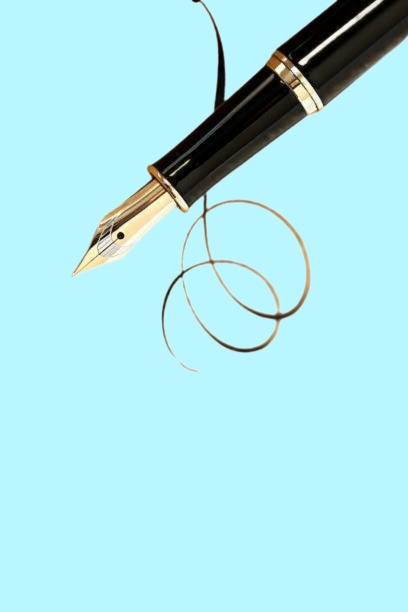
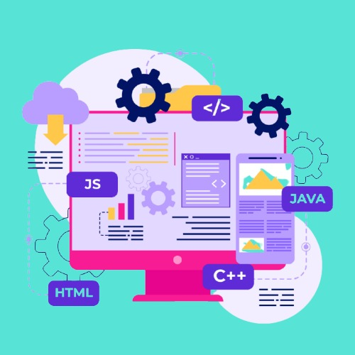
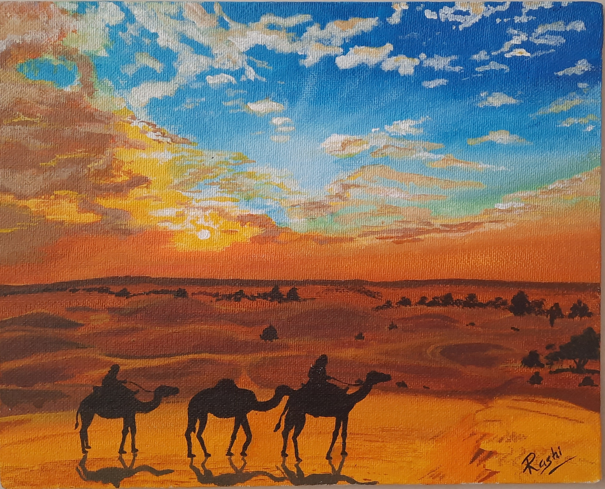
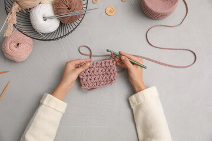

Aspiring Python developer with a background in Electronics and research.
I have hands-on experience in control systems and basic Python programming,
and I am currently learning backend development and building projects to improve my skills.

I love painting, the first thing i love to do.
Painting is more than a hobby; it is a source of joy and
a "sanctuary" that provides a sense of accomplishment.

crochet is a meditative practice for me.
There is a feeling of joy in response to an emerging piece